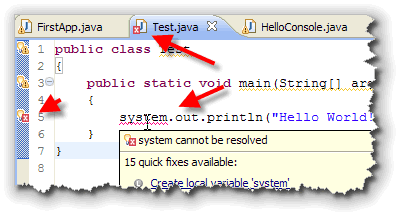
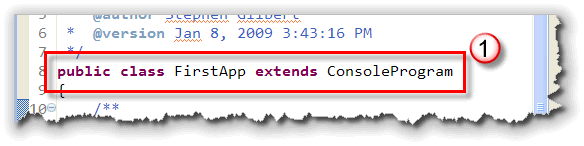
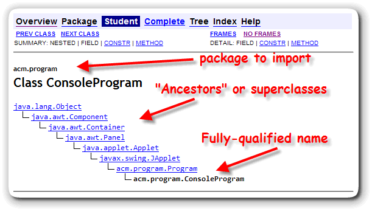
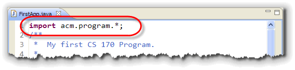
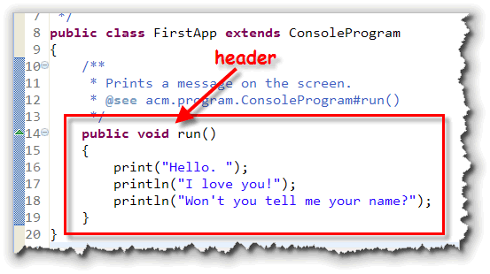
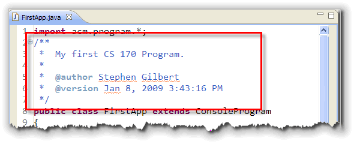
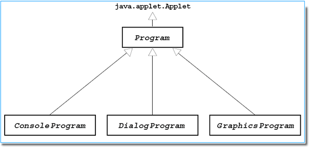

In the on-campus lab this week, you used
the Eclipse IDE to enter, compile, and run both Java applications and
Java applets, treating your computer keyboard much like Aladdin's magic lamp.
You typed in the incantation, and, if you did it just right, the compiler
accepted it, and your program ran.
In the on-campus lab this week, you used
the Eclipse IDE to enter, compile, and run both Java applications and
Java applets, treating your computer keyboard much like Aladdin's magic lamp.
You typed in the incantation, and, if you did it just right, the compiler
accepted it, and your program ran.
Of course, programming really isn't magic; instead of memorizing a dusty volume of "Open Sesame", in this class, you'll learn the meaning behind each of the phrases that make up your Java programs. (I have to admit, though, that there will still be times when I'll wave my hands, and say something that sounds suspiciously like "Abracadabara". But those times will get much rarer as the semester goes on.)
Java Mechanics
To create your own Java programs, you follow a mechanical process, a well-defined set of steps called the edit-compile-run cycle that looks like this:

- Create your source code
- Compile the code to produce object, or bytecode
- If syntax errors occur, return to your editor to fix them
- Run your program using appletviewer or the Java interpreter
- If runtime errors occur, return to your editor to fix them
Learning this process is not the same as learning how to program; you must master the process—that is necessary—but mastering the process doesn't mean you'll write correct and elegant programs.
Here are the steps in the process:
Edit
When you write a program in a high-level language, you write your instructions—in the form of programming language statements—using a text editor. The document you produce at this stage is called source code.
Compile
Once you've written your program, you compile it by using a software program called, (surprise!), a compiler. The compiler turns your source code into machine language and produces another document called object code. If your program fails to compile, (if you have "grammatical" or sytnax errors in your source code), then you must re-edit the code until it compiles correctly.

One of the nice things about the Eclipse IDE is that the compiler runs automatically whenever you save your source code. If you've made a syntax error, then Eclipse can't compile your code, and, instead, it underlines your error like this, where I've forgotten to capitalize the System class.Once a program compiles without errors, it is syntactically correct. It still may contain runtime or logic errors, however. Runtime errors are errors that cause your program to "crash" when it runs, usually displaying a nasty error message on the screen. Logic errors occur when your program produces the wrong output; it may give the wrong answer or carry out an action at the wrong time, like giving you a "C" when your percentage grade in the class is exactly 80%. (This kind of logic error is called a fencepost error).
Run
Once your program compiles, you run it. All high-level languages require a significant amount of additional machine-language code—in addition to the code you've written—before your program will actually run. This additional code is contained in collections of classes known as libraries. In Java, these different libraries are placed in special zip files known as Java Archives or JAR files.
How this additional code is added to your program varies from language to language and from system to system. Generically, this is called linking, when library code is combined with the code you've written to produce and executable image in memory that can be run. With Java, this happens behind the scenes as part of the process of compiling your program, and then, again, when you run your program. There is no separate explicit linking step that you have to worry about.
Internally, Java uses something called the classpath (or build path) to know which libraries or folders to search for additional classes. Eclipse will normally take care of this for you when you use only the classes available with the JRE. When you use additional library classes (like we'll do with the ACM JTF class libraries), you'll have to explicitly adjust the build path inside Eclipse.
When you run your program, the first thing you'll want to do is to verify that it runs as you expect it. This process is called testing. It is not uncommon to find that your program has some logic errors that can only be discovered when the program runs. These errors may even make your program "crash". These kinds of errors are called runtime errors
To fix a runtime error, you go back to the very first step—your source code—and make changes there, repeating the edit-compile-run cycle until the program runs correctly.
Java Program Organization
As you saw in class this week:
- Every Java program is a class definition.
- A class definition is a blueprint that is used to construct objects; in the case of an applet or application, you may want to think of that object as a "program object."
Not every Object-Oriented language works like this. In C++, for
instance, every program consists of a main() function that
may, or may not create different kinds of objects. In Java,
there are no separate program entities; there are only
classes and objects.
Basic Structure
The basic structure for every Java program looks like this:
…some stuff
public class SomeClassName
{
… some more stuff
}
The file name for this program must be SomeClassName.java and the file can contain only one public class definition. (You can define other helper classes in the same file, but they cannot be public classes.)
Note : This is different from many other programming languages where the program name and the name of the file are not related. In Java, the name of the file and the name of the program must be identical (including case). The file name and the public class it contains must match exactly.
A class definition has two parts: a class header and a class body. The header "declares" or "announces" the class for the compiler; think of it as a formal introduction.
Braces and Blocks
The class body, (the portion of the class in braces { }),
is where the attributes and methods for the class are defined.
In Java, braces {} are used to mark the beginning and end
of the class body. Braces are also used to surround (or
delimit) the body of a method, as well as the bodies of
loops and selection statements. Just think of braces as
punctuation that says:
{ "this is the beginning of a section"
} "and, this is the end of a section"
In programming, a delimited "section" of code like this is called a block. Braces, along with indentation, allow you to quickly see and understand the general structure or "shape" of a program. To facilitate this, every time you use a set of braces, the "stuff" inside the braces should be indented, by one tab stop, as well.
The Class Header
Let's start by examining the header for FirstApp.java and then we'll come back to the body. (Click the hyperlink in the previous sentence to open the source-code for the program in a separate window.) Keep the window open while we study the code.
;){kind=link}
The class header for FirstApp, on line 8, looks like this:

The first part of the header is the declaration public class.
The class declaration simply says to the compiler:
"May I introduce a class definition?"
so the compiler knows how to interpret the words that follow. Both public and class are two of the fifty-or-so Java keywords. Keywords, (also sometimes called reserved words), are the built-in vocabulary of a language. In Java:- all keywords are lowercase
- you cannot use keywords as identifiers, (names you make up and then use to describe classes, objects, methods, and attributes)
- You must spell the keywords correctly and use them in the correct context. If you use a keyword inappropriately, or if you misspell it, you will generate a syntax error: a violation of Java's internal rules of grammar.
You'll find a list of the Java keywords in Appendix F of your textbook.
Name of the Class
When you write the declaration public class, this puts the Java compiler into such a state of anticipation, that it won't be satisfied unless you tell it exactly what class is about to be described. Thus, the next part of the class header must be the class name. Here we've named our class FirstApp. (Remember, also, that this class must be located in a file that matches the classname exactly, and that has the extension .java.)
While public and class are keywords, the word FirstApp is a different kind of beast; this is called an identifier. An identifier is a name that you make up to label classes, attributes, methods, and variables. You can use any name you like, as long as you follow a few simple rules:
- you can use letters, digits, and the underscore character
- your identifier cannot start with a digit
- identifiers are case sensitive
- you cannot use keywords as identifiers
Remember : Unlike keywords, (which are all lowercase), you may use uppercase as well as lowercase in your identifiers. But, the identifiers cat, Cat, and CAT are not the same!
If you've programmed in another language, such as C, Pascal, or Visual Basic, these rules don't seem too different. The biggest difference (when it comes to identifiers) between Java and these other languages is not readily apparent, but pops to the surface when you ask the question, "What's a letter?"
Unlike these other languages Java isn't limited to using the ASCII character set (the most widely used computer-character encoding scheme). Instead, it uses Unicode, the international character set that provides some 65,000 different characters. So, although Java identifiers are limited to characters and digits, those characters and digits can be any valid Unicode character or digit. (In other words, you can use Japanese, Russian, or Sanscrit characters when creating your identifiers.)
Naming Conventions
In programming, as in dining, what is legal is not always appropriate. While it is usually not illegal to eat with your hands, it's often ill-advised, and so most of us obey a set of social conventions.
Much like social conventions, identifier naming conventions allow you to infer a great deal about an object by the way it is named. Also like social conventions, identifier naming conventions can become prissy and pedantic, ignoring the more important considerations of clarity and simplicity.
It is always more important to make sure that your variable names impart meaning to your audience, (that is, other programmers trying to read your code), than that they adhere to some rigid naming rule. To that end, you should follow the "golden rules" that are true in any programming language:
- Try to make your names understandable
- Use names that accurately describe what your identifier does.
For instance, the variable names:
quarterlySales = quarterlySales + monthlySales;
are much easier to understand thanx = x + x2;
Before we get to the normal conventions, I should mention two other recommendations. Java allows you to begin a name with an underscore as well as a dollar sign ($), but you should avoid doing so. Java itself uses the dollar sign to create names for "inner classes". To avoid some unusual and hard to find bugs, you should avoid using the dollar sign ($) in your names at all.
It is also legal to start an identifier with an underscore, but you should avoid that as well. It is just too easy to miss a leading underscore when you are reading code, and if you use them you'll spend many more fruitless hours staring at code that "should" work, but doesn't for some reason.
Here are the more-or-less agreed upon naming standards in the Java world:
- Class names: CapitalizeEveryWord
- Method and field names: startLowThenCaps
- Constants: CAPS_WITH_UNDERSCORES
What Does extends ConsoleProgram Mean?
So far, we've taken care of three of the five words in the FirstApp header; only two to go.
The next word, extends, is a keyword like public and class. The extends keyword means that what precedes it (in this case the public class FirstApp), adds something to, or builds upon, what follows it (in this case, something called ConsoleProgram).
That makes sense. If a header is supposed to introduce a class, this part of the header is introducing its lineage. Sort of like:
This is Steve, and his parents are...
The real question is, "What's a ConsoleProgram, and where does it come from?" We can tell right away that ConsoleProgram isn't a keyword like public or class or extends, because we know that all of the keywords are lowercase, and ConsoleProgram is capitalized.
Perhaps, your knowledge of convention might help? And, indeed it does. If you look back at the convention for identifiers, you'll see that only classes begin with a capital (like ConsoleProgram) followed by lowercase characters. In fact, ConsoleProgram is a class, one of the classes supplied with the ACM Class Libraries. (You can read more about the ACM Class Libraries at the very end of this lesson.)
Packages and Qualified Names
The ConsoleProgram class actually has quite a pedigree, which you can discover by looking at its Java Documentation:

As you can see, the fully qualified name of this class is:
acm.program.ConsoleProgram
Now, if you've been following along carefully, you may be a little confused. Was the dot (.) a valid character inside a class name or other identifier? No, it wasn't. Instead, the name, acm.program.ConsoleProgram describes a class that is contained inside a Java package.
In Java, a package describes the place where the specific class we want to use is stored. In this case, the ConsoleProgram class is in the package, acm.program. These classes are stored in the archive (or zip) file, acm.jar that I've included in the Eclipse project when I created it. Package names that begin with java or javax are part of the core Java packages included with the JRE, and you are not permitted to modify them. This was one of the issues in the Sun-Microsoft suit.
Importing Classes
If you look back at the class organization at the start of this lesson, you'll see that it starts with the statement:
...some stuff
As you undoubtedly surmised, this was just a placeholder, waiting until the time was right for its explication. The time is right.
What goes in place of "...some stuff" is another Java keyword: import. The import statement tells the Java compiler which packages to look in when it is trying to locate a class.
Specifically, since we told the compiler that FirstApp extends ConsoleProgram, we must also tell it where to find the ConsoleProgram class. We could do that explicitly by writing:
public class FirstApp extends acm.program.ConsoleProgram
but that would quickly become tedious. Instead, we added this
line to the top of our class file:

Now, when the Java compiler encounters the name ConsoleProgram, it will look first in the acm.program package to locate the class. If it can't find it there, then it issues an error.
This particular form of the import statement is called a wildcard import because it makes all of the classes in the packagage accessible to your program. Instead, you coule use a specific import statement like this:
import acm.program.ConsoleProgram;
to make sure that only the ConsoleProgram was imported. Many programmers prefer to use specific rather than wildcard imports. However, if your program uses a lot of classes from the same package, it does make the import section of your program fairly large.
Introducing Methods
Now that you've learned about the general structure of a Java program, and have learned how to define the class header, let's move on and take a look look at the class body, where you'll define the attributes and methods.
We'll study attributes later in the coures. Methods are where the real action takes place in your Java programs.
What is a Method?
A method is:
a named piece of code that performs an
action,
or that calculates a value.
Methods appear in two places in your Java programs:
- when you define a method, you write the Java instructions (called statements) to carry out a particular task, and then associate those statements with a particular name.
- when you invoke or call a method, you use the name to perform the predefined actions as your program runs.
Calling a Method
Each method is (usually) attached to a particular object. When you want to tell the object to perform an action, you "send it a message" as in this example:
println("Won't you tell me your name?");
This line of code sends the println message to the currently executing program. In this example:
- The message name is println.
- The message is sent to the FirstApp object that was created when your program started running. Next week you'll see how to send messages to different objects.
To carry out your request, the FirstApp object will use a method, and the method will be named println. Every time you send a message to an object, that object must:
- have a method of the same name as the message, or
- have an ancestor class (superclass) containing such a method.
Now, since there doesn't seem to be a definition for the println method inside the FirstApp class that we wrote, that means the program inherited the method from one of its ancestors, in this case, the ConsoleProgram class where println is defined.
Since "messages" and "methods" are so closely related, the terms "sending a message" and "invoking (or calling) a method", usually mean the same thing, and I'll frequently use them interchangeably.
Different Kinds of Methods
There are several different kinds of methods. Some methods just perform an action, like printing text on the console or changing the font used by a button. In other languages, the these methods are called commands or procedures. In Java, they are known as void methods.
Often, methods perform a calculation when they are called. These kinds of methods can be used inside expressions, where the calculated value is returned to the object that sent the message. In other languages these kinds of methods are usually called functions.
Many, (maybe most), methods require extra information that permits the method to customize its behavior. This extra information is passed to the method as one or more arguments or parameters. In the example you just saw, the quoted chunk of text, "Won't you tell me your name!", is the argument or parameter passed to the println() method. Such chunks of text (enclosed in double-quotes) are known as a String in Java.
Defining a Method
When you create a new class, you'll have define the methods that give the class its distinctive behavior. If you don't define any methods, then your program just won't do anything!
All ACM program have to define one such method, the method named run(). Let's take a look at it now.

Notice that a method definition, like a class definition, consists of both a header, and a body, and that the method definition is placed inside the class definition.
The Method Header
This run method header consists of these four pieces:
public: This is called the access specifier and it means that objects from different classes are free to ask theFirstAppclass to perform this action. If the method wereprivate, then only otherFirstAppobjects would be able to invoke the method, and we couldn't run the program. You'll make almost all of your methodspublic.void: The access specifier is followed by the method return type. Every method can, potentially, produce a single value. If therun()method produced a value, we'd put the type of that value (number, character, etc) here. If a method produces no value—likerun()—you have to say so by using a return type ofvoid.-
run: This is the name of the method. Because the ACM program startup code looks for a method namedrun()when you try to run your program, you must be careful to spell this exactly as shown. WritingRun()orRUN()will not create a compile-time or syntax error, but your method won't be called when you try to run the program either, and so none of your instructions will be carried out. -
(): Every method definition has a set of parentheses following the method name. If a method requires parameters (also known as arguments), here's where the definitions for those parameters are placed. Therun()method doesn't have any arguments or parameters, but we still need to include the parentheses.
In reality, it's kind of early in the course to be dropping all of
these details on you. For now, I'd simply treat the syntax of the
run() method as an incantation that has to
be typed in a particular manner, and leave it at that. If you
understand that run is where a Java ACM program
starts running, then you're doing fine.
The Method Body
Like the class body, the begin and end of a method body are marked by braces. Inside the braces are statements that perform actions or create objects. Each time the method is activated (called or invoked), all of the statements inside the method body are performed, in order, one after another.
FirstApp's run() method contains three statements;
one print() statement that prints the characters
"Hello " on the display, followed by two println()
statements that print "I love you!" and "Won't you tell me your name?".
When the print() method displays its message on the
console window, it leaves the cursor sitting at the end of the
text it printed. When the second statement is executed, it's
println() displays "I love you!" on the same line
as the "Hello. " generated by the print() statement.
The println() method, used in the second two statement,
add a newline character to the end of any message you print.
Thus, when the third statement is executed, it doesn't follow the
words "I love you!", but starts on a new line.
Java Style Issues
Let's look at a couple of style issues you'll need to understand when you write your own Java programs. Java is a free-form language. That means that statements may span several lines, like this
public
class
FirstApp
extends
ConsoleProgram
{
print
(
"Hello. "
)
}
Or, you can scrunch up all the code on a single line or two, like the examples on page 17 in your textbook.
You probably don't want to write code like this, however, and you certainly don't want to read code written using this style. You should use whitespace such as blank lines and indenting to improve the readability of your programs, not reduce the readability.
Try to group related statements together into "paragraphs", and separate such groups from unrelated groups of statement by inserting blank lines and comments.
For a more exhaustive treatment of programming style, make sure you read the CS 170 Programming Styleguide which will be used to evaluate your homework assignments.
Fortunately, the Eclipse IDE makes formatting your code correctly pretty easy. Just use Format from the Source menu and your code will be laid-out according to the rules for this class.
The Role of the Semicolon
Since statements can span multiple lines, you may be wondering
how the Java compiler tells when a statement is done. Java uses
the semicolon (;) to mark the
end of a statement, just like C and C++. Note that this
is different than Pascal, where a semicolon is used to
separate multiple statements, and Visual Basic where the
end of the line marks the end of a statement. It's also different
from JavaScript where semicolons are optional.
Comments
Lines that begin with two forward slashes, //,
are comment lines, lines added for the benefit of the
human readers of your program; both the slashes and
anything following them on the same line are ignored by the
compiler. (Make sure you don't insert a space between
the two slashes, however, because that confuses the compiler).
In Eclipse, you can quickly comment and uncomment lines of code by selecting the lines and then using the keyboard shortcut Ctrl + / or choosing Toggle Comment from the Source menu.
You can also create comments that span multiple lines by
using the delimiter /* (a forward slash,
immediately followed by an asterisk) to start the comment, and the delimiter
*/
(an asterisk immediately followed by a forward slash) to end the comment.
You cannot have multi-line comments inside other multi-line comments, (called
nested comments), but
you can put any number of single-line comments inside a multi-line comment.
A third type of comment is called a JavaDoc or Documentation
comment. These comments begin with the symbol
/**, and end with a */
just like a regular multi-line comment. These special comments can be used
to automatically create Java documentation, using the javadoc program.
There are several types of JavaDoc comments that you'll learn about
throughout the semester. For right now, let's look at the introductory
comment that appears at the beginning of every file.
JavaDoc comments use the @ symbol
to create specific tags used to generate documentation. Every file
you create should start with a JavaDoc comment using the
@author and the
@version tags to identify yourself and
the date and version of the program you're working on.
Here's an example of a JavaDoc comment at the beginning of
FirstApp.java as it appears in Eclipse:

Well, that's it for the basic structure of a Java program. As I mentioned earlier though, let me finish up with some background material on the ACM class libraries that we used for this first program.
The ACM Class Libraries
Today, Java is the most popular language for
teaching computer science, especially for introductory classes like
CS 170.
 In 2003-2004, the College Board moved the Advanced Placement Computer
Science program to Java, from C++. Most universities, (UCI, Berkeley, Stanford,
etc.) use Java for at least some, (if not the majority), of their courses.
In 2003-2004, the College Board moved the Advanced Placement Computer
Science program to Java, from C++. Most universities, (UCI, Berkeley, Stanford,
etc.) use Java for at least some, (if not the majority), of their courses.
Many schools, though, have discovered that Java, which was designed with the commercial marketplace in mind, isn't really ideal for teaching beginning programmers the fundamental concepts they'll need to master. Specifically, instructors have complained that Java is too complex, and too unstable.
Responding to these complaints, the Education Board of the Association for Computing Machinery, (ACM), set up the ACM Java Task Force (JTF) in Fall 2003, and charged them with the task of:
- reviewing the Java language, APIs, and tools from the perspective of introductory computing education.
- developing a stable collection of pedagogical resources to make it easier to teach Java to first-year computing students without having those students overwhelmed by its complexity.
Under the leadership of Eric Roberts from Stanford, the JTF released the first version of the ACM libraries in February 2005. We'll be using the "beta" of version 2.0 in this class. As we go through the semester, I'll show you how to use some of these libraries to create some interesting programs. We'll start, though, by looking at the ACM program package of classes.
 What is the ACM?
What is the ACM?
"The ACM, the Association for Computing
Machinery, is an international scientific and educational organization
dedicated to advancing the arts, sciences, and applications of
information technology. With a world-wide membership of more than 80,0000,
ACM is a leading resource for computing professionals and students
working in the various fields of Information Technology, and for
interpreting the impact of information technology on society."
Visit the ACM Web site,
http://www.acm.org for more information, or to join up.
Student memberships start at about $20 a year.
The ACM Program Classes
When you first start programming in Java, there are certain concepts
that are fairly natural and easy to explain, and others that are
difficult to grasp, even after you are fairly proficient in the
language. One of those difficult-to-grasp topics is the fact that
Java doesn't have a separate facility for programs.
Instead, you can stick a main() method into any class,
and turn that class into a program, (kind of). (This is what your
textbook does in the first chapter.)
When you add a main() method to a class, though,
that class doesn't really turn into a program. The
main() method can't access any of the instance
variables in the class, or call any of the regular (non static)
methods; it's really a very awkward mechanism, that isn't
at all object-oriented.
Applets, on the other hand, are very object-oriented: your browser creates an instance of your class. All of the methods you write have access to both the class instance variables and to the other methods in the class. The problem with applets, though, is that you have to run them through a Web browser and have to create an extra source file, the HTML page that loads the applet.
"Wouldn't it be nice", the JTF folks said, "if we could have programs that were as simple as applets, and that worked when run as both an application and as an applet?"
The ACM program classes, shown here, do just that:

This hierarchy of classes allows you to easily write programs the can run both as an applet, and as an application. Also, by changing just one line of code, you can change the "input style" from console-mode to dialog-based. (You can read the documentation for all of the classes in the ACM Library on the Java Task Force Web site.)
Coming up...
That's it for this week. Make sure you complete all of the exercises and take the quiz before the deadline. Next week we'll take a closer look at Input, Output, and Strings in Java.